사회조사분석사-1급 (2011-10-02 기출문제)
1과목: 고급조사방법론 I
1. 어느 신문에 대선 후보자들에 대한 지지도에 관한 여론조사 결과가 다음과 같이 나타났을 때의 설명으로 틀린 것은?
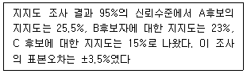
- A후보의 지지도가 29%에서 22%사이에 있을 확률은 100중 95이다.
- A후보의 지지도와 B후보의 지지도는 오차범위 내에 있다.
- B후보의 지지도와 C후보의 지지도는 오차범위 밖에 있다.
- A후보가 당선될 확률은 95%이다.
(정답률: 알수없음)

2. 비용과 무응답 감소를 위해 여러 자료 수집방법을 혼용하는 조사(mixed-mode survey)에서 측정의 일관성 문제가 발생하는데 이에 대한 설명으로 틀린 것은?
- 사회적 기대에 부응하려는 경향이 우편조사보다 전화조사에서 더 강하게 나타난다.
- 동의하려는 응답편향(acquiescence)이 자기기입식보다 면접조사에서 더 강하게 나타난다.
- 질문지 배열순석가 응답에 미치는 효과(question order effects)가 자기기입식 보다 전화조사에서 더 강하게 나타난다.
- 전화조사에서는 처음에 제시된 응답범주를 선택하는 경향(primacy effect)이 나타나는 반면, 우편조사에서는 끝에 제시된 응답범주를 선택하는 경향(recency effect)이 나타난다.
(정답률: 알수없음)
3. 관찰자의 활동이 처음에 공개적으로 알려지고, 따라서 사람들로부터 어느정도 공개적으로 지원을 받는 조사자의 참여수준은?
- 완전참여자
- 관찰자로서의 참여자
- 참여자로서의 관찰자
- 완전관찰자
(정답률: 알수없음)
4. 내용분석(content analysis)의 장점과 가장 거리가 먼것은?
- 서베이 조사에 비해 시간과 비용 측면에서 경제적이다
- 다른 조사방법에 비해 연구계획을 부분적으로 수정하고 반복하는 것이 용이하다.
- 이미 기록된 내용을 분석하므로 높은 타당도를 확보할 수 있다.
- 분석 대상에 어떠한 영향도 가하지 않는 비개입적 조사 방법이다.
(정답률: 알수없음)
5. 종단연구(longitudinal study)의 하나로 각 시점 마다 동일한 사람들을 조사하는 방법은?
- 코호트 연구(cohort study)
- 패널연구(panel study)
- 추세연구(trend study)
- 시계열 연구(time-series study)
(정답률: 알수없음)
6. 다음 중 코딩과정상의 오류를 찾아내기 위한 분석방법과 가장 거리가 먼 것은?
- 해당 질문에 대한 응답의 빈도분석
- 해당질문에 대한 응답의 일관성분석
- 해당질문에 대한 응답의 최대값과 최소값 분석
- 해당 질문에 대하여 잘못 입력된 응답이 포함된 설문지의 고유번호(ID)를 알아내는 분석
(정답률: 알수없음)
7. 우편조사와 비교한 면접조사의 특징으로 틀린것은?
- 응답환경을 표준화 할 수 있다.
- 개별적 상황에 높은 신축성과 적응성을 갖는다.
- 응답자의환경조건이나 개인적인 자료를 얻을 수 있다.
- 응답자를 표집한 결과가 지역적으로 넓게 분포된 경우 효율ㆍ효과적으로 자료를 수집할 수 있다.
(정답률: 알수없음)
8. 국민들의 관심도가 높은 부동산 가격 억제 정책이 오후 9시에 전격 발표되었다. 다음날 조간신문에 이 정책에 대한 국민들의 지지율만을 발표하려고 한다. 표본규모를 전국적으로 1000명을 정확하게 채워서 조사하려고 할 때 가장 적합한 자료수집방법은?
- 대인면접조사
- 전화조사
- 우편조사
- 온라인조사
(정답률: 알수없음)
9. 조사시행시 응답자, 조사의뢰자, 조사자에 대한 윤리로 옳은 것은?
- 익명으로 조사를 실시하는 경우는 개별 응답내용의 외부 노출이 허용될 수 있다.
- 개인정보를 보호하기 위해 응답내용을 숫자나 부호화 하고 코딩된 자료를 통합하여 분석한다.
- 가급적 원하는 결과가 나올 수 있도록 조사방법을 선택한다.
- 조사 의뢰자에게 불리한 내용은 알리지 않는다.
(정답률: 알수없음)
10. 질문지를 작성한 후 시행되는 사전조사(pre-test)와 관계가 없는 것은?
- 본조사를 위해 표집된 표본 가운데 일정한 수의 응답자를 조사대상으로 삼는다.
- 본조사와 면접방식이나 진행절차를 동일하게 한다.
- 응답자들이 잘못 이해하는 질문이 있는가에 유의한다.
- 응답범주에 제시되지 않은 응답을 기록해 둔다.
(정답률: 알수없음)
11. 과학적 연구의 기초개념에 대한 설명으로 틀린 것은?
- 개념(concept)은 가설과 이론의 구성요소로 보편적인 관념안에서 특정현상을 나타내는 추상적인 표현이다.
- 변수(variable)는 실증적인 검증과정에서 개념을 측정 가능한 형태로 변화시킨 것이다.
- 패러다임(paradigm)은 2개 이상의 변수들 간의 관계에 대한 진술이며, 아직 검증되지 않은 사실이다.
- 이론(theory)이란 어떤 특정현상을 논리적으로 설명하고 예측하려는 진술을 말한다.
(정답률: 알수없음)
12. 조사보고서 작성에 관한 설명으로 틀린것은?
- 요약보고서를 첨부하여 이해의 편의성을 돕는다.
- 보고서는 완벽성, 정확성, 간결성을 기준으로 작성해야 한다.
- 통계분석의 결과치는 의미있는 구간측정치의 형태로 표시하는 것이 바람직하다.
- 보고서의 신뢰도를 위해 조사대상자의 사적인 응답을 공개하는 것이 바람직하다.
(정답률: 알수없음)
13. 과학적 연구방법에 관한 설명으로 틀린것은?
- 연역적 논리는 일반적 사실에서 특수한 사실을 이끌어 내는 방법이다.
- 귀납의 논리는 경험을 통해 이론에 도달하는 방법이다.
- 과학적 지식은 연역과 귀납적 논리의 순환 과정을 통해 발전한다.
- 엄격한 실증주의적 가설형성에는 연역적 방법보다 귀납적 방법이 적절하다.
(정답률: 알수없음)
14. 면접조사원이 면접을 진행하는데 필요한 전략으로 옳은 것은?
- 면접조사원의 편견이 조사과정에 영향을 미치는 것을 방지하기 위해 연구목적을 알려 주지 않는다.
- 자율적으로 조사할 수 있도록 면접조사원의 재량권을 극대화 한다.
- 응답하기 미묘한 질문에 대하여 응답자가 응답하지 않으려고 할 때는 바로 다음 질문으로 넘어가 면접시간을 단축하도록 교육한다.
- 면접조사원 교육과정에서 상황별 역할 연습을 실시한다.
(정답률: 알수없음)
15. 자료수집방법에 관한 설명으로 옳은 것은?
- 2차 자료는 조사자가 직접 조사하여 수집하는 자료이다.
- 투사법은 응답자가 조사의 목적을 모르는 상태에서 다양한 심리적 의사소통법을 이용하여 자료를 수집하는 방법이다.
- 서베이법은 응답자의 행동과 태도를 조사자가 관찰하고 기록함으로써 정보를 수집하는 방법이다.
- 표적집단면접법은 고정된 표본을 대상으로 시간경과에 따라 여러차례 반복적으로 측정하는 조사이다.
(정답률: 알수없음)
16. 다음중 외생변수를 통제하는데 가장 효과적인 실험설계는?
- 현장실험설계
- 순수실험설계
- 솔로몬 4집단 설계
- 통제집단 사전사후 설계
(정답률: 알수없음)
17. 연구문제의 해결가능성을 평가하기 위한 기준과 가장 거리가 먼 것은?
- 실증적으로 검증이 가능한 주제이어야 한다.
- 학문적 공헌도와 실질적 효용성이 있어야 한다.
- 연구문제가 명료하고 구조화되어야 한다.
- 자료획득, 시간과 비용 및 연구대상자 확보 등과 같은 문제들을 해결할 수 있어야 한다.
(정답률: 알수없음)
18. 기술조사(descriptive research)에 대한 설명으로 틀린것은?
- 일반적으로 표본조사로 실시된다.
- 특정 대상의 행동 양식을 살펴보고자 할 때 실시된다.
- 선행연구가 없어 모집단의 특성을 파악하고자 할 때 실시된다.
- 모집단의 현상이나 상태에 대한 원인을 설명하고자 할 때 실시한다.
(정답률: 알수없음)
19. 다음은 무엇에 관한 설명인가?
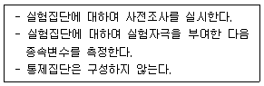
- 단일집단 사후조사(one-shot case study)
- 솔로몬 4집단설계(solomon four-group design)
- 정적 집단비교(static-group comparison)
- 단일집단 사전사후조사설계(one-group pretest-posttest design)
(정답률: 알수없음)
20. 문헌조사(literature review)의 목적과 가장 거리가 먼 것은?
- 해당분야의 연구현황을 파악한다.
- 문제해결을 위한 방법을 탐색한다.
- 연구의 이론적 기초를 제시한다.
- 구체적 연구가설을 제시한다.
(정답률: 알수없음)
21. 다음 중 횡단연구에 관한 설명으로 틀린 것은?
- 동일한 연구시기에 자료를 수집하는 방법이다.
- 정태적인 성격이라고 할 수 있다.
- 자료수집대상자는 동일집단이어야 한다.
- 표본의 크기가 상대적으로 크다.
(정답률: 알수없음)
22. 다음중 2차 자료를 활용한 분석 또는 조사 과정이 아닌 것은?
- 정부기관에서 발행한 통계연보를 통해 도시별 정보화 수준을 조사했다.
- 연구소에서 수집한 패널자료를 통해 청소년의 성장과정을 분석했다.
- 인터넷을 통해 설문조사를 실시하여 정당선호도를 분석했다.
- 조사기관에서 조사한 자료를 통해 소비자구매조사를 했다.
(정답률: 알수없음)
23. 다음중 표본조사에서 질문지를 통해 본질을 파악하기 어려운 자료는?
- 미성년자가 담배피우는 행위에 대한 태도
- 한국 정치인들의 능력에 대한 태도
- 현재의 직업을 선택하게된 동기
- 만약 도둑이 집에 침범할 때 실제 대응하는 행동
(정답률: 알수없음)
24. 비체계적-비공개적 의사소통으로 다양한 동기유발 방법을 사용하여 응답자 내면의 신념이나 태도 등을 조사하는 자료수집 방법은?
- 설문지법
- 현지조사법
- 단어연상법
- 표적집단면접법
(정답률: 알수없음)
25. 질문지 조사에서 자유응답형 질문문항의 장점이 아닌것은?
- 탐색조사에 유리하다.
- 조사비용이 낮아진다.
- 질적 연구에 유리하다.
- 응답범주가 넓은 경우 유리하다.
(정답률: 알수없음)
26. 질문지의 질문항목을 배치할 때 유의해야 할 사항과 가장 거리가 먼 것은?
- 민감한 문제나 주관식 문제들은 질문지 앞쪽에 배치한다.
- 개연성 질문들(contingency questions)은 그에 적합한 순서대로 정리한다.
- 고정반응(response set)을 막기 위해 항목들을 적절하게 배치한다.
- 신뢰도를 측정하기 위해 도입되는 문제 짝(pair)들은 분리하여 배치한다.
(정답률: 알수없음)
27. 이론, 가설, 관찰, 일반화, 이론으로 과학을 묘사하는 Wallace 모형의 특징으로 옳은 것은?
- 과학은 일반적으로 이론에서 출발한다.
- 과학은 일반적으로 가설에서 출발한다.
- 과학은 일반적으로 관찰에서 출발한다.
- 과학은 어느곳에서나 출발할 수 있다.
(정답률: 알수없음)
28. 다음 중 가설의 평가기준과 가장거리가 먼 것은?
- 가설은 논리적으로 간결하여야 한다.
- 가설은 경험적으로 검증할 수 있어야 한다.
- 가설검증결과는 가능한 한 광범위하게 적용할 수 있어야 한다.
- 동일 연구분야의 다른 가설이나 이론과 연관이 없어야 한다.
(정답률: 알수없음)
29. 다음 중 집합단위의 자료를 바탕으로 개인의 특성을 추리할 때 저지를 수 있는 오류는?
- 의도적 오류(intentional fallacy)
- 생태학적 오류(ecological fallacy)
- 일반화 오류(generalization fallacy)
- 개인주의적 오류(individualistic fallacy)
(정답률: 알수없음)
30. 순수실험설계(true experimental design)의 특징이 아닌것은?
- 독립변수의 조작
- 외생변수의 통제
- 비동질 통제집단의 설정
- 실험집단과 통제집단에 대한 무작위 할당
(정답률: 알수없음)
2과목: 고급조사방법론 II
31. 설문자료를 입력하다 보면 응답이 빠진 문항들을 발견할 수 있다. 이럴 경우 총 사례수가 분석 하기에 충분하면 제외할 수 도 있으나 그렇지 못할 경우 보완해서 사용해야 한다. 이때 자료를 보완하는 방법과 가장 거리가 먼 것은?
- 변수의 평균치를 계산하여 누락된 사례의 변수값으로 사용한다.
- 집단 유형 등 일반적 지식의 견지에서 평가해 변수값을 정한다.
- 빈도분포를 통해 정상분포곡선이 되게 변수값을 정한다.
- 다변인 회귀분석과 같은 회귀추정을 통해 변수값을 정한다.
(정답률: 알수없음)
32. 확률에 따라 표본을 추출하는 방법이 아닌 것은?
- 군집표집(cluster sampling)
- 유의표집(purposive sampling)
- 무작위표집(random sampling)
- 계통표집(systematic sampling)
(정답률: 알수없음)
33. 다음 사례에서 A연구원이 고려하지 못한 타당성 저해요인은?
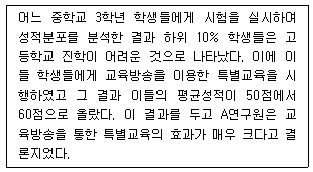
- 우연적 사건(history)
- 실험대상의 소멸(mortality)
- 통계적 회귀(statistical regression)
- 시험효과(testing effect)
(정답률: 알수없음)
34. 다음 상황에서 가장 유용한 확률표본추출방법은?
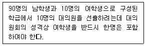
- 할당표본추출
- 단순무작위표본추출
- 층화표본추출
- 계통적표본추출
(정답률: 알수없음)
35. 측정도구의 신뢰성 검사방법에 대한 설명으로 틀린것은?
- 재검사법(test-retest method)은 상관관계를 활용한다.
- 재검사법(test-retest method)은 측정대상이 동일하다.
- 복수양식법(parallel-forms method)은 측정도구가 동일하다.
- 반분법(split-half method)은 측정도구의 문항을 양분한다.
(정답률: 알수없음)
36. A리서치 회사에서 입사면접대상자의 팀워크 능력을 보기위한 성격검사를 실시했을때, 대상자들이 그 회사에 취직하기 위해 좋은 인상을 받을 수 있는 응답만을 선택할 경우 발생할 수 있는 오류는?
- 사회적 바람직성(social desirability)
- 문화적 편견(cultural bias)
- 위약효과(piacebo effect)
- 호손효과(Hawthorne effect)
(정답률: 알수없음)
37. 표본오차에 관한 옳은 설명을 모두 짝지은 것은?
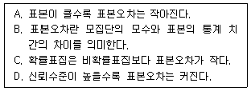
- A, B, C
- A, C
- B, D
- A, B, C, D
(정답률: 알수없음)
38. 몸무게가 무거울 수록 취업이 잘 되는지를 알아보는 연구에서 몸무게가 취업에 긍정적으로 영향을 미치는 것으로 나타났으나, 남성과 여성 집단으로 나누어 다시 분석한 결과 몸무게와 취업 간의 관계는 없는 것으로 나타났다. 이때 성별은 무슨 변수인가?
- 매개변수
- 통제변수
- 독립변수
- 종속변수
(정답률: 알수없음)
39. 다음 중 외생변수를 통제하는 방법과 가장 거리가 먼 것은?
- 외생변수영향을 받았다고 판단되는 실험대상자를 제거한다.
- 통제집단과 실험집단에 대해서 다른 조사원이 측정한다.
- 조사대상 표본을 무작위로 선정한다.
- 측정시기마다 실험변수의 순서를 다르게 변화시킨다.
(정답률: 알수없음)
40. 표본조사와 전수조사의 비교설명으로 틀린것은?
- 모집단이 클 경우 비표본오차는 전수조사에서 더 문제가 된다.
- 모집단의 파악이 어려운 경우 전수조사는 불가능하다.
- 표본조사는 전수조사에 비해 비용과 시간 면에서 경제적이다.
- 모집단의 수가 매우 작을 경우 표본조사가 바람직하다.
(정답률: 알수없음)
41. 다음 사례의 설명으로 옳은 것은?
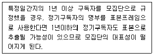
- 모집단과 표본프레임이 일치하는 경우이다.
- 표본프레임이 모집단 내에 포함되는 경우이다.
- 모집단이 표본프레임 내에 포함되는 경우이다.
- 모집단과 표본프레임이 일부만 일치하는 경우이다.
(정답률: 알수없음)
42. 측정을 받는 일반인들이 측정에 사용된 문항들이 측정하고자 하는 개념을 잘 측정한다고 느끼는 정도를 무엇이라고 하는가?
- 안면타당성(face validity)
- 내용타당성(content validity)
- 개념타당성(construct validity)
- 기준에 의한 타당성(criterion-related validity)
(정답률: 알수없음)
43. 다음 ( )안에 들어갈 알맞은 것은?
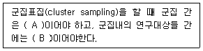
- A - 동질적, B - 동질적
- A - 이질적, B - 동질적
- A - 동질적, B - 이질적
- A - 이질적, B - 이질적
(정답률: 알수없음)
44. 어의차이척도(semantic differential scale)를 사용하는데 가장 적합하지 않은 조사는?
- 정부정책 지지도 조사
- 정치인 지지도 조사
- TV 프로그램 인지도 조사
- 국가별 호감도 조사
(정답률: 알수없음)
45. 눈덩이 표본추출이 필요한 경우 가장 적합한 조사대상은?
- 불법체류 노동자
- 수도권지역 치매 노인
- 섬 주민
- 휴대폰 사용자
(정답률: 알수없음)
46. 측정과 척도에 관한 설명으로 틀린것은?
- 측정이란 사물과 사건과 같은 목적물의 속성에 가치를 부여하는 것이다.
- 척도란 측정대상에 부여하는 가치들의 체계이다.
- 측정에 있어서 체계적오류는 신뢰도와 관련이 있고 무작위 오류는 타당도와 관련이 있다.
- 일반적으로 측정의 형태와 척도의 수준은 같은 의미로 사용된다.
(정답률: 알수없음)
47. 리커트척도에서 문항들이 단일차원을 이루는지 확인할 수 있는 방법은?
- 회귀분석
- 요인분석
- 재생계수 계산
- 구조방정식모형
(정답률: 알수없음)
48. 변수의 측정수준이 바르게 짝지어진 것은?
- 화씨온도 - 비율변수
- 사회조사분석사 자격증 1, 2급 - 등간변수
- 10점 만점의 직업만족도 - 비율변수
- 사회조사분석사 1급 자격시험 응시자 수 - 비율변수
(정답률: 알수없음)
49. 거트만척도에서 응답자의 응답이 이상적인 패턴에 얼마나 가까운가를 측정하는 것은?
- 스캘로그램
- 최소오차계수
- 단일차원계수
- 재생가능계수
(정답률: 알수없음)
50. 자료처리과정에서 제작하는 부호책(codebook)에 필요하지 않은 것은?
- 변수이름
- 변수의 유형
- 변수설명
- 통계적 유의수준
(정답률: 알수없음)
51. 다음중 확률표본추출방법을 적용할 수 없는 경우는?
- 전국 세대주(모집단)를 전화번호부로 표집할 경우
- 서울시 거주 유권자(모집단)를 서울역에서 표집할 경우
- 전국 유권자(모집단)를 선거인 명부로 표집할 경우
- 전국 대입 수험생(모집단)을 수능시험 응시자 명단으로 표집할 경우
(정답률: 알수없음)
52. 다음 중 비비례적 층화표집(disproportionate stratified sampling)을 이용하기에 가장 적합하지 않은 상황은?
- 각 층의 층내표준편차의 차이가 작을 때
- 각 층에 따라서 자료수집에 필요한 경비가 상당한 차이가 있을때
- 모집단에 대한 일반화에 관심이 적을 때
- 특정 하위층을 세밀하게 살펴보고 싶을 때
(정답률: 알수없음)
53. 신뢰성 측정방법 중 크론바흐 알파(Cronbach's Alpha)에 관한 설명으로 옳은 것은?
- 한 척도에 여러개의 크로바하 알파값이 있다.
- 문항수가 적을수록 크론바하 알파값은 커진다.
- 신뢰성이 낮을 경우 신뢰성을 낮게 하는 문항을 찾아낼 수 있다.
- 각 문항들이 서로 상관관계가 없다는 논리에 근거하고 있다.
(정답률: 알수없음)
54. 다음 중 단순무작위표집(simple random sampling)에 관한 설명으로 틀린것은?
- 모집단에 대한 자세한 지식이 불필요하다.
- 항상 대표성을 지닌 표본이 추출된다.
- 난수표(a table of random number)를 사용하기도 한다.
- 모집단을 구성하고 있는 모든 실체나 단위가 표본으로 뽑힐 동등한 기회를 가진다.
(정답률: 알수없음)
55. 다음은 무엇에 관한 설명인가?
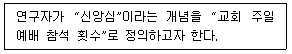
- 지표화
- 범주화
- 개념적 정의
- 조작적 정의
(정답률: 알수없음)
56. 다음중 변수의 코딩에서 유의할 점이 아닌것은?
- 가능한 한 변수의 실제값을 부호화한다.
- 각 변수의 실질적인 의미를 잃지 않는 한도 내에서 가능한 큰 숫자를 부여한다.
- 빈칸을 실질적인 부호로 사용하지 않는다.
- 각 변수의 응답범위를 자세히 한다.
(정답률: 알수없음)
57. 대학입학시험의 타당성을 판단하기 위한 기준으로 대학에서의 학업성과를 설정하여 대입시험점수와의 상관성을 살펴본 경과 별로 상관관계가 없는 것으로 나타났다고 하자. 이때 대학입학시험의 타당성은 어떤면에서 문제가 있다고 할 수 있는가?
- 내용타당성(content validity)
- 개념타당성(construct validity)
- 논리적타당성(logical validity)
- 기준에 의한 타당성(criterion-related validity)
(정답률: 알수없음)
58. 개념적 정의와 조작적 정의에 관한 설명으로 틀린것은?
- 조작적 정의는 측정을 위해서 불가피하다.
- 개념적 정의는 추상적 수준의 정의이다.
- 조작적 정의는 인위적이기 때문에 가능한 한 피해야 한다.
- 개념적 정의와 조작적 정의가 반드시 일치하는 것은 아니다.
(정답률: 알수없음)
59. 표본의 크기결정을 위한 고려사항과 가장 거리가 먼 것은?
- 타당도
- 신뢰수준
- 오차의 한계
- 모집단의 표준편차
(정답률: 알수없음)
60. 표본오차의 크기에 직접적인 영향을 주는 것은?
- 문항의 수
- 변수의 수
- 표본의 크기
- 모집단의 크기
(정답률: 알수없음)
3과목: 고급통계처리및분석
61. 판별분석에서 독립변수의 수가 4이고 집단의 수가 10일때 사용되는 판별식의 수는?
- 3
- 4
- 9
- 10
(정답률: 알수없음)
62. 다음중 판별분석에 대한 설명으로 틀린 것은?
- 종속변수가 질적(qualitative)변수인 경우에 다루는 통계기법이다.
- 판별분석의 기본 목적은 하나의 범주형 종속변수와 여러개의 양적 독립변수들 간의 관계를 살펴보는데 있다.
- 판별분석은 하나의 대상물(사람, 기업, 또는 제품)이 속해있는 집단을 구분하고자 할 때 이용된다.
- 대상물들을 명시된 일련의 특성에 따른 유사성을 토대로 두 개 또는 그 이상의 집단으로 분할할 때 사용한다.
(정답률: 알수없음)
63. 어떤 현안에 대해 의견(찬성과 반대)을 조사한 결과 다음과 같은 표를 구하였다. 성별에 따라서 현안에 대한 의견이 차이가 있는지 검정하려고 한다. 이때 귀무가설(현안에 남녀간 의견차이가 없다)하에서 남자이면서 현안에 찬성하는 셀의 기대값은?
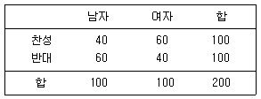
- 30
- 40
- 50
- 60
(정답률: 알수없음)
64. 정규분포 N(μ, 2.252)를 따르는 모집단으로부터 추출된 크기 100의 랜덤표본에서 구한 표본 평균이
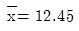
인 경우 μ의 95% 신뢰구간의 길이는? (단, Z는 표준정규분포를 따르는 확률변수 일때 P(Z≤1.96)=0.975이다.)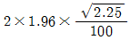
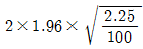
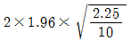
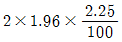
(정답률: 알수없음)
65. 다음중 유의수준에 대한 설명으로 옳은 것은?
- 귀무가설이 옳을때, 귀무가설을 채택할 확률이다.
- 귀무가설이 옳을때, 대립가설을 채택할 확률이다.
- 귀무가설이 옳을때, 귀무가설을 기각할 확률이다.
- 귀무가설이 옳을때, 대립가설을 기각할 확률이다.
(정답률: 알수없음)
66. 크기가 50인 표본을 활용하여 판매량(y)을 종속변수로하고 광고비(x)를 독립변수로 하는 회귀분석을 수행할 때 오차제곱합(SSE)에 대응하는 자유도는?
- 50
- 49
- 48
- 47
(정답률: 알수없음)
67. 균일분포 U(0, θ)로부터 확률표본을 X1, ....Xn이라할 때, 모수 θ에 대한 최우추정량(MLE)은? (단, Xn=max(X1....Xn이다.)
- X(n)
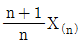
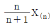
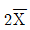
(정답률: 알수없음)
68. 모비율을 추정할 때 오차가 0, 2를 넘지않을 확률이 최소한 95%가 되도록 하려면 표본의 크기가 최소한 얼마가 되어야 하는가? (단, z0.0025=1.96)
- 30
- 25
- 45
- 35
(정답률: 알수없음)
69. 가설검증의 원리에 대한 설명으로 틀린것은?
- 검정을 수행하기 위해서는 귀무가설 하에서의 검정통계량의 분포가 필요하다.
- 검정의 오류 가운데 제 1종 오류가 제 2종 오류보다 중요한 의미를 가진다.
- 유의수준은 제 1종 오류의 최대값이라 할 수 있다.
- 검정력 함수는 대립가설 하에서 제 2종 오류와 동일하다.
(정답률: 알수없음)
70. 대학진학을 앞둔 150명의 고3학생을 대상으로 선호하는 진학계열을 다음과 같이 얻었다. 3가지 진학계열의 선호도가 동일한지를 검정하는 카이제곱 검정 통계량의 값은?
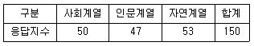
- 17/50
- 18/50
- 19/50
- 20/50
(정답률: 알수없음)
71. 요인분석(factor analysis)과 관련이 없는 용어는?
- 직교회전(orthogonal rotation)
- 덴드로그램(dendrogram)
- 주성분분석(principal component analysis)
- 자료축소법(data reduction method)
(정답률: 알수없음)
72. 다음은 무엇에 관한 설명인가?
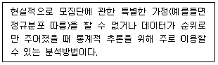
- 교차분석
- 판별분석
- 비모수통계
- 회귀분석
(정답률: 알수없음)
73. 다음 정리중 최소분산불편추정량(UMVUE)을 구하는데 직접 사용되는 것은?
- Bonferroni 부등식
- Lehmann-Scheffe 정리
- Basu 정리
- Neyman-Pearson 정리
(정답률: 알수없음)
74. 계층적 군집분석에서 두 군집간의 거리를 두 군집 개체간 최단거리로 하는 방법을 무엇이라고 하는가?
- 중심연결법(Centroid Method)
- 단일연결법(Single-Linkage)
- 완전연결법(Complete-Linkage)
- 평균연결법(Average-Linkage)
(정답률: 알수없음)
75. 회귀분석에서 다중 공선성이 존재할 때 사용하는 방법이 아닌것은?
- 능형 회귀(ridge regression)
- 주성분 회귀(principle component regression)
- 잠복근 회귀(latent root regression)
- 로버스트 회귀(robust regression)
(정답률: 알수없음)
76. 인자의 직교회전에 대한 설명으로 틀린 것은?
- 베리맥스 방법은 대표적인 인자의 직교회전방법이다.
- 변수들의 그룹핑을 통해 인자의 해석을 용이하게 하기 위한 방법이다.
- 회전 후 공통성(communality)은 회전 전 공통성과 비교하여 변하지 않는다.
- 회전 후 각 인자의 설명력은 회전전 각 인자의 설명력과 비교하여 변하지 않는다.
(정답률: 알수없음)
77. A, B 두 종류의 청량음료를 8명의 전문가에게 교대로 맛을 보게 한 다음, 시음 결과를 점수로 나타내도록 했다. 주어진 표에는 맛의 점수와 그 차이를 나타낸 것이다. 두 청량음료의 맛에 심각 한 차이가 있는지 윌콕슨 부호순위검정(Wilcoxon signed rank test)를 실시하고자 한다. 다음 중 윌콕슨 부호순위 통계량의 관측값(W+)을 올바르게 구한것은
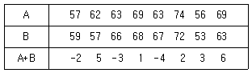
- 17
- 23
- 65.5
- 71.5
(정답률: 알수없음)
78. N*N 거리행렬이 주어졌을 때 군집방법에 대한 설명으로 옳은 것은?
- 계층적 군집방법은 병합적인 방법과 수형도(tree diagram)을 이용하는 방법이 있다.
- 비계층적 방법은 일종적인 분할적 방법으로 가까운 개체들끼리 묶어 가면서 군집을 만드는 것이다.
- 군집 형성의 기본은 군집내 거리는 짧게, 군집간 거리는 크게 하는데 있다.
- 병합적 군집 방법은 최단연결법, 중심연결법과 수형도등이 일반적이다.
(정답률: 알수없음)
79. 다음의 가설에 대한 윌콕슨의 순위합검정을 실시하기로 한다. 검정통계량(W)을 다음과 같이 정의할 때, 검정절차에서 옳은 것은?
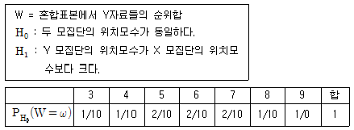
- 검정통계량의 관측값이 W=8로 주어질 때, 유의확률(또는 p-값)은 2/10이다.
- 검정통계량의 관측값이 W=9이면 유의수준 5%에서 귀무가설을 기각할 수 있다.
- 이 경우 유의수준 10%의 검증을 위해 확률화 검정(randomized test)이 필요하다.
- 순위합검정을 위해서는 모집단에 대한 정규분포의 가정이 불필요하다.
(정답률: 알수없음)
80. 회귀모형의 기본가정으로 틀린 것은?
- 오차항들은 서로 독립적이다.
- 오차항들의 분산은 동일하다.
- 오차항들의 분포는 정규분포이다.
- 서로 다른 오차항들의 공분산은 1이다.
(정답률: 알수없음)
81. 어떤 모집단에 대하여 모평균을 추정할 때 90% 오차의 한계가 25이내가 되도록 하기 위한 표본의 수를 구하면? (단, 모집단의 표준편차가 70으로 알려져 있다.)
- 20
- 22
- 24
- 26
(정답률: 알수없음)
82. 중심극한정리에 대한 설명으로 틀린 것은?
- 표본평균의 확률분포에 관한 정리이다.
- 표본평균의 평균은 모평균과 같고 분산은 표본의 크기에 역비례한다.
- 표본평균을 표준화한 확률변수의 확률 분포는 표본의 크기에 관계없이 정규분포를 한다.
- 중심극한정리는 모집단의 분포에 상관없이 성립한다.
(정답률: 알수없음)
83. 두집단의 자료를 분석한 결과 다음표를 얻었다. 두 집단의 분산이 같다고 가정할 때, 두 집단의 공통분산의 추정값은?
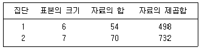
- 2.6
- 3.5
- 4.0
- 5.7
(정답률: 알수없음)
84. 전체 재학생 수가 20,000명(남학생 14,000명, 여학생 6,000명)인 어느 대학교 학생들을 대상으로 새로운 졸업 자격제도 도입에 대한 찬반 의견을 수렴하고자 한다. 이 학교 남학생 중 600명, 여학생 중 400명을 각각 랜덤하게 추출하여 조사한 결과, 남학생과 여학생 찬성률은 각각 40%, 60%로 나타났다. 이 경우 전체 재학생의 찬성률에 대한 가장 적절한 추정값은?
- 46%
- 48%
- 50%
- 52%
(정답률: 알수없음)
85. 선형회귀분석에서 최소제곱추정(least squares estimation)과 관련된 다음 설명 중 항상 성립하는 것이 아닌 것은? (단, 회귀모형은 y1=β0+β1x1+ϵi,i=,....,n 이고 e는 잔차를 나타낸다.)
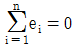
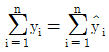
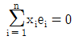
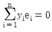
(정답률: 알수없음)
86. 요인분석(factor analysis)에 대한 설명으로 틀린것은?
- 인자분석에서는 설명변수와 반응변수의 구분이 필요 없는 분석이다.
- 인자적재행렬은 공통인자의 중요성을 나타내는 가중치를 말한다.
- 특정인자(ϵi, i=1,...,p)에 대해서는 평균=0, 분산=σ2을 가정한다.
- 공통성(communality)이란 공통인자에 의해 설명되어지는 분산을 의미한다.
(정답률: 알수없음)
87. 확률분포 X1,....,Xn은 모평균
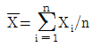
으로 추정량을 제시할 수 있다.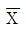
의 표준오차( 의 표준편차)를 추정하고자 할 때 적절한 추정량은?
의 표준편차)를 추정하고자 할 때 적절한 추정량은?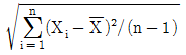
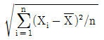
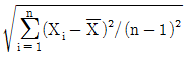
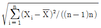
(정답률: 알수없음)
88. 다음의 내용에 해당되는 다변량 분석방법은?
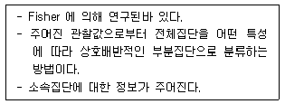
- 요인분석
- 군집분석
- 판별분석
- 주성분분석
(정답률: 알수없음)
89. A, B, C 세 종류의 식이요법의 효과를 비교하고자 실험을 하였다. 12명의 건강상태가 비슷한 회복기의 환자를 랜덤으로 3집단으로 나누어 일정기간 동안 A, B, C의 식이요법(Diet)을 실행한 후 체중감소 자료를 분석한 결과 다음과 같은 Duncan 검정의 결과를 얻었을 때 설명으로 틀린 것은? (단, 체중감소의 평균이 크면 식이요법 효과가 크다라고 판정한다.)
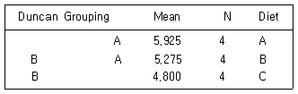
- A집단이 가장 좋은 식이요법 효과를 얻었다.
- A집단과 B집단은 식이요법 효과에 차이가 없다.
- B집단과 C집단은 식이요법 효과에 차이가 없다.
- A집단과 C집단은 식이요법 효과에 차이가 없다.
(정답률: 알수없음)
90. 다음은 종속변수 Y, 설명변수 X, Z에 대해 중회귀모형을 적합하여 작성한 분산분석표이다. 요인 ㉱ (F 통계량)의 값을 바탕으로 검정한 결과로 옳은 것은? (단, 임계치는 5% 유의수준에서 구한값이다.)
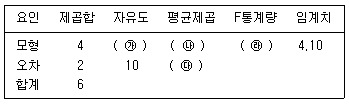
- X와 Z관련 회귀계수가 모두 0이라고 할 수 있다.
- X 관련 회귀계수만 0이라고 할 수 없다.
- X와 Z 관련 회귀계수와 상수항이 모두 0이라고 할 수 없다.
- X와 Z 관련 회귀계수가 모두 0이라고 할 수 는 없다.
(정답률: 알수없음)
91. 주어진 자료 X1,X2,....,Xn에 대하여 위치모수 θ에 대한 귀무가설 H0:θ=θ0를 검정하기 위한 부호검정 통계량
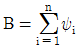
의 귀무가설 하에서의 평균은? (단,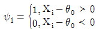
이다.)- n/4
- n/2
- n
- 2n
(정답률: 알수없음)
92. A와 B 요인간의 비교를 위한 2요인 분산분석을 실시한 결과 상호작용(교호작용)이 존재한다는 결론이 나왔다. 이에 대한 수준조합별 꺾은선 그래프를 그려보니 서로 교차하는 형태가 나타나 위의 결론을 뒷받침해 주었다. 이러한 결과들을 이용하여 A요인의 수준별 효과에 대한 겸정결과에 대해 내린 결론으로 가장 적합한 것은?
- 상호작용 효과가 존재하므로 B요인을 무시하고 A요인만의 수준별 차이가 있는지를 검정한다.
- A요인의 수준별 효과에 대한 검정은 상호작용 효과의 유의성에 영향을 받지 않는다.
- 상호작용이 존재하므로 B요인을 고려하지 않음
- 상호작용이 존재하므로 B요인을 고려하지 않은 A요인만의 검정은 원칙적으로 의미가 없고, A요인의 처리수준 효과는 B요인의 처리수준별로 결론을 내려야 한다.
(정답률: 알수없음)
93. 상관분석과 회귀분석에 관한 설명으로 틀린것은?
- 두 변수사이의 상관계수가 0 의 값을 가지는 경우 두 변수는 관련이 없읍을 의미한다.
- 상관분석이라 함은 두 변수사이의 상관계수를 구하여 두 변수간의 선형성 유무를 판단하는 분석방법이다.
- 두 변수사이의 함수관계에 대한 통계적 분석 방법을 회귀분석이라 부른다.
- 단순선형회귀모형에서 결정계수(coefficient of determination)는 상관계수의 제곱이다.
(정답률: 알수없음)
94. 확률밀도함수가 f(x)=p(1-p)x,x=0,1,2,...인 기하분포를 따르는 모집단으로부터 추출된 확률표본을 {X1,X2,...Xn라 할때 p의 최대우도추정량(Maximum Likelhood Estimator)은? (단,
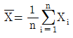
이다.)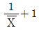
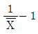
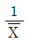
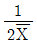
(정답률: 알수없음)
95. 모수인자 A와 변량인자 B를 가지는 반복이 없는 이원배치 분산분석에 대한 설명으로 틀린것은?
- 오차항과 변량인자의 효과에 대해 정규분포의 가정이 필요하다.
- 변량인자 B보다는 모수인자 A의 효가에 대한 검출이 주목적이다.
- 변량인자의 효과가 유의하지 않으면 이를 오차항에 풀링한다.
- 변량인자를 무시한 일원배치에 비해 오차항의 자유도가 커진다.
(정답률: 알수없음)
96. 임의로 추출된 10명의 비만여성에 대하여 1개월간 체중조절법을 적용하기 이전에 측정한 몸무게와 적용한 후 측정한 몸무게의 차(조절 후 몸무게-조절전 몸무게)의 평균이
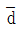
=-1.81kg 이었으며 차의 분산은 1.35kg 이었다. 체중조절법이 효과가 있는지를 검정하기 위한 검정통계량의 값은?- -4.015
- -4.233
- -4.669
- -4.926
(정답률: 알수없음)
97. 다음 중 선형회귀분석의 기본가정으로 틀린 것은?
- 독립변수 x는 비확률변수로 가정할 수 있으며, 종속변수 y는 오차를 수반하는 확률변수이다.
- 변수 x와 y사이에 존재하는 관련성은 주어진 x값에서 y의 기댓값이 x의 선형식으로 적절히 표현될 수 있다.
- 주어진 x값에서 변수 y는 정규분포를 한다.
- 변수 y값은 x가 변함에 따라 변하지 않으며, 분산도 변하지 않는다.
(정답률: 알수없음)
98. 자료 (x1, y1),....,(xn, yn)에 대하여 단순선형회귀모형 y=β0+β1xi+ϵi(i=1,2,...n)을 고려하자. 이때 오차항 ϵ이 평균이 0이고, 분산이 σ2인 정규분포 N(0, σ2)를 따른다고 하자. 회귀직선의 기울기 β1의 최소제곱 추정량
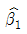
의 분산은?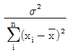
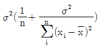
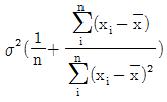
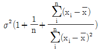
(정답률: 알수없음)
99. 단순회귀모형에서 독립변수의 회귀계수 β1의 신뢰구간을 구하고자 한다. 표본의 크기는 100이고, β1의 추정량은 4이며 추정량의 분산은 20이었다. β1의 신뢰구간은? (단, t0.⑤(98)=1.66)
- (10. 8943, 20.5478)
- (-7.2383, 9.5472)
- (-5.5953, 10.9843)
- (-3.4237, 11.4237)
(정답률: 알수없음)
100. 다음 중 두 변수간의 상관계수가 1이 되는 경우에 해당하는 것은?
- 한 고등학교에서의 수험생들의 수학능력시험 점수와 내신성적
- 지난 한달 동안 기온을 섭씨로 잰 온도 값과 화씨로 잰 온도 값
- 학급 학생들의 키와 몸무게
- 지난 달 매일의 주가 지수와 환율
(정답률: 알수없음)